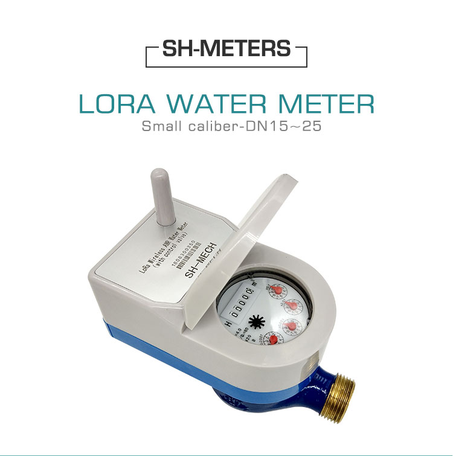
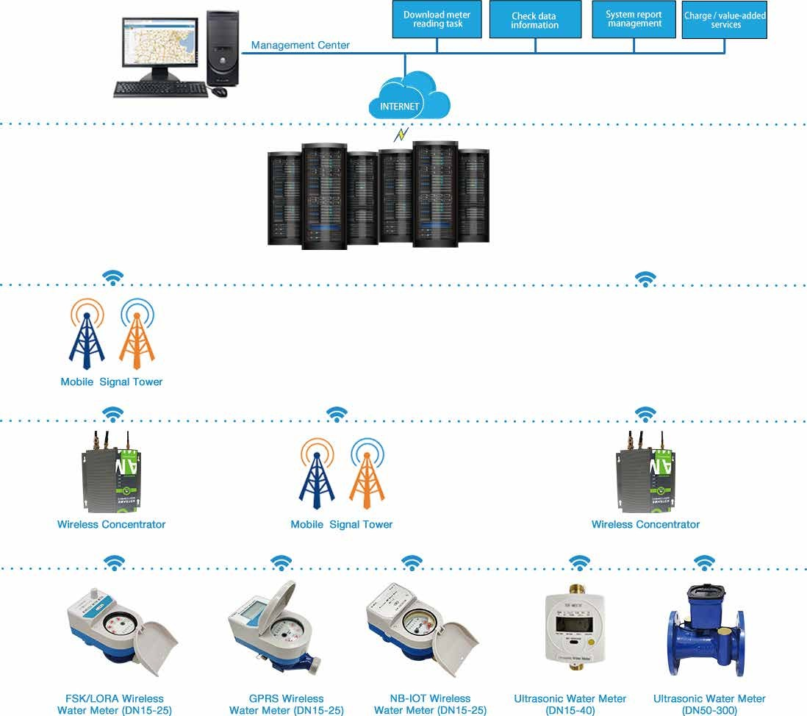
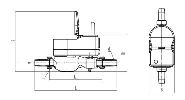

E-mail:
info@sh-meters.comCall Us:
+86 13131984716Lora water meter system are transmit and receive the signal from water meter and concentractor via Lora signal .You can reading and control water supply via computer.
Lora water meter system are transmit and receive the signal from water meter and concentractor via Lora signal .You can reading and control water supply via computer.
Service
· Quality Gurantee: Water meter for 1 year;
· Support install guide & test in site;
· Date sheet can be sent to other management system easily.

Ⅱ.Advantages
1. Belongs to the short distance communication technology, the transmission rate is relatively low,
so the power consumption is small.
2. The administrator can actively send the instruction of meter reading or on-off valve to the
water meter from the platform through the concentrator to achieve the purpose of real-time
control.
3. The cost of laying is low, because LoRa band belongs to free public band, so there is no
long-term investment cost.
Ⅲ.Reading Frequency.
Lora data reading methods are divided into active reading and passive reading. Active reading,
the current cumulative flow of the water meter can be read through the platform. Passive
reading, through the platform set concentrator upload time and frequency for data reading
Ⅳ.Installation conditions
1) Intensive installation of water meters
2). External power supply can ensure the normal operation of data concentrator
3). High Intensity of GPRS Signal
Outline dimensional drawing

 LoRa Smart Water Meter
LoRa Smart Water Meter High Performance Intelligent Home Remote LoRa Water ...
High Performance Intelligent Home Remote LoRa Water ... Smart AMR Lora Water Meter
Smart AMR Lora Water Meter Smart Wifi Lora Water Meter
Smart Wifi Lora Water Meter LoRa Intelligent Valve Control Water Meter
LoRa Intelligent Valve Control Water Meter